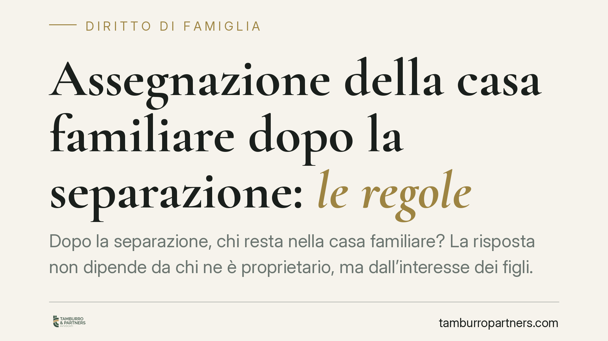

Assegnazione della casa familiare dopo la separazione: le regole
Dopo la separazione, chi resta nella casa familiare? La risposta non dipende da chi ne è proprietario, ma dall'interesse dei figli. L'assegnazione segue regole precise, oggi contenute nel codice civile e affinate dalla Cassazione. Capire questi criteri è essenziale per gestire la separazione senza aspettative errate e per tutelare i minori coinvolti.

Il caso in breve
Quando una coppia si separa, la casa familiare diventa spesso il punto più delicato. Molti pensano che la casa spetti a chi ne è proprietario. Non è così. La legge segue una logica diversa: al centro c'è la tutela dei figli, non il titolo di proprietà.
Questo significa che il coniuge proprietario può trovarsi a lasciare la casa, mentre l'altro vi resta insieme ai figli. È una conseguenza che sorprende molti e che vale la pena chiarire prima di avviare il procedimento.
Inquadramento normativo
La disciplina dell'assegnazione della casa familiare aveva il suo riferimento storico nell'art. 155 quater del codice civile, introdotto dalla riforma sull'affidamento condiviso. Oggi la materia è confluita nell'art. 337 sexies cod. civ., che ne ha ripreso i contenuti nel quadro delle disposizioni sull'esercizio della responsabilità genitoriale.
Il principio cardine è semplice: il giudice assegna la casa tenendo prioritariamente conto dell'interesse dei figli. Non si tratta di premiare o punire un coniuge, ma di garantire ai minori la continuità dell'ambiente domestico in cui sono cresciuti (la cosiddetta *habitat domestico*, ossia il luogo degli affetti e delle abitudini quotidiane).
La Cassazione ha ribadito più volte che l'assegnazione ha natura funzionale alla protezione della prole. Ne discende che, in assenza di figli minori o maggiorenni non economicamente autosufficienti conviventi, non c'è spazio per l'assegnazione: la casa torna a seguire le regole ordinarie della proprietà.
Cosa cambia in concreto
Dalla natura di questo istituto derivano alcune conseguenze pratiche importanti.
Il proprietario non è automaticamente favorito. Se i figli minori restano con l'altro genitore, la casa viene assegnata a quest'ultimo, anche se non ne è proprietario. Il diritto di proprietà non viene cancellato, ma la sua fruizione resta sospesa finché dura l'assegnazione.
L'assegnazione incide sul mantenimento. Il godimento gratuito della casa è un valore economico. Il giudice ne tiene conto nel determinare l'assegno di mantenimento: chi resta nell'abitazione ha un vantaggio patrimoniale che riduce, di norma, l'importo dovuto dall'altro coniuge.
L'assegnazione può venire meno. Il diritto cessa se l'assegnatario non abita più stabilmente la casa, se convive *more uxorio* con un nuovo partner o se contrae nuove nozze. Cessa anche quando i figli raggiungono l'autosufficienza economica o lasciano l'abitazione.
Rilevano anche i terzi. Se la casa appartiene ai suoceri o è concessa in comodato, la posizione dei proprietari originari può essere sacrificata all'interesse dei minori, con esiti spesso conflittuali. La Cassazione ha affrontato più volte i casi di comodato familiare, distinguendo a seconda della destinazione impressa all'immobile.
Attenzione ai fraintendimenti
Due equivoci ricorrenti meritano una precisazione.
Primo: l'assegnazione non trasferisce la proprietà e non è un risarcimento. È un provvedimento revocabile, legato alle condizioni di fatto.
Secondo: la convivenza dei figli deve essere reale e prevalente. Una presenza sporadica non giustifica il mantenimento dell'assegnazione.
Cosa fare in concreto
- Verificate la titolarità dell'immobile prima di avviare la separazione: proprietà esclusiva, comunione dei beni, comodato dei suoceri comportano scenari diversi.
- Documentate la residenza effettiva dei figli: certificati anagrafici, iscrizioni scolastiche, contesto di vita quotidiana sono elementi che pesano davanti al giudice.
- Considerate l'impatto sull'assegno di mantenimento: chiedete un calcolo che tenga conto del valore del godimento della casa.
- Trascrivete il provvedimento di assegnazione nei registri immobiliari: è la condizione per renderlo opponibile ai terzi che acquistassero l'immobile.
- Rivolgetevi a un professionista per valutare la posizione specifica, soprattutto quando la casa appartiene a familiari o è gravata da mutuo.
La casa familiare non si assegna a chi ne è proprietario, ma a chi garantisce ai figli la continuità di vita. Comprendere questa logica evita aspettative sbagliate e permette di impostare la separazione su basi realistiche.
---
*Contributo informativo a cura di Tamburro & Partners - Avv. Giuseppe Tamburro. Non costituisce parere legale.*
Ogni famiglia ha il suo equilibrio.
Separazione, divorzio, affidamento, assegno: se vuoi un confronto riservato su una specifica situazione, scrivi allo studio. Ti rispondiamo entro un giorno lavorativo.